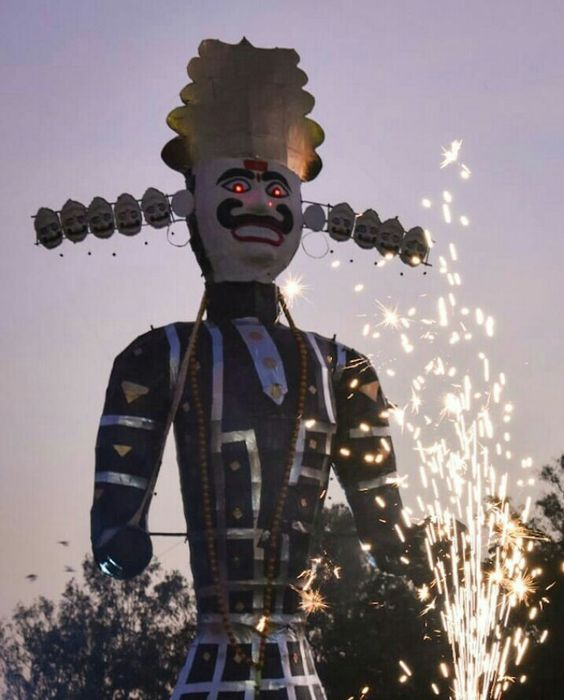

Festive Footsteps, created by Ripudaman Tyagi for Vikas Tyagi, a student living abroad offers simple, step-by-step guides to help those away from India celebrate and stay connected with Indian festivals.
Made with by Ripudaman Tyagi